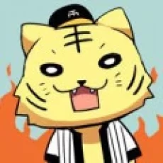

Auteur
Shōgo Kinugasa (衣きぬ笠がさ 彰しょう梧ご, Kinugasa Shōgo) est un scénariste et auteur japonais. Né en novembre, il serait principalement basé à Fukuoka. Il est actuellement en charge de l'oeuvre « Classroom of the Elite ».
- Nom : Kinugasa Shougo
- Nationalité : Japonaise
- Genre : Homme
- Date de Naissance : 1978
- Statut : En activité
- Début : 2012
Synopsis
L'histoire prend place dans le lycée Kōdo Ikusei, une école prestigieuse dotée d'installations ultramodernes où 100% des étudiants vont ensuite à l'université ou entrent dans la vie active. Les élèves ont une liberté totale, ils peuvent avoir la coupe de cheveux qu'ils désirent et apporter n'importe quel bien personnel dans l'établissement. Kōdo Ikusei est comme le paradis, mais seulement en apparence, en effet seulement les étudiants avec de bons résultats reçoivent ce genre de traitement.
Dans cette école, chaque mois, selon les notes et le comportement d'une classe, celle-ci se voit attribuer un nombre de points en conséquence. Ces points permettent l'achat en tout genre au sein de l'école (nourriture, jeux, consoles, ...). De plus chaque groupe est classé en fonction du nombre de points reçus.
Kiyotaka Ayanokōji est un élève de la classe D, regroupant les pires élèves de l'établissement, ceux avec les résultats les plus mauvais. Pour une certaine raison, Kiyotaka a été négligent durant les examens d'entrée et a donc été placé dans cette fameuse classe.
Après avoir rencontré Suzune Horikita et Kikyō Kushida, deux élèves de sa classe, Kiyotaka Ayanokōji et ses nouvelles camarades décident ensemble de coopérer afin d'améliorer les notes de leur classe et essayeront d'atteindre les classes supérieures
Personnages Principaux
Kiyotaka Ayanokōji (綾小路 清隆あやのこうじ きよたか)
Voix japonaise : Shōya Chiba
Le protagoniste et le narrateur incertain de l'œuvre. Il a négligé son examen d'entrée pour une certaine raison et finit dans la classe D, symbole d'échec où tous les rebuts de l'école sont assignés. Kiyotaka Ayanokōji est un garçon sans motivation qui n'est pas bon pour communiquer avec les autres. Il échoue souvent à tenter de devenir ami avec les autres de sa classe en raison de son incapacité à communiquer. Sa situation commence à changer après avoir rencontré Suzune Horikita et Kikyō Kushida, deux autres étudiantes de sa classe. Il a promis d'aider Suzune à atteindre la classe A, à condition qu'elle n'enquête pas sur lui. Il semble en effet avoir un passé sombre dont il ne veut pas parler. Leur professeure principale Saeda Chabashira s'intéresse d'ailleurs à ce dernier. Ses notes sont dans la moyenne et il a conscience de la façon dont il dépense ses points. Cependant il semble que ses notes soient souvent bien en dessous de ses capacités réelles. Comme le fait remarquer Manabu Horikita, il vise un score de 50 sur 100 à toutes les épreuves lors de l'examen d'admission. De plus Suzune remarque rapidement que son intellect et son physique sont largement supérieurs à la moyenne. Mais pour une raison inconnue, il évite de se mettre en avant et attribue souvent aux autres ses mérites.
Suzune Horikita (堀北 鈴音)
Voix japonaise : Akari Kitō
Une élève distante qui est la petite sœur du président du BDE, Manabu. Assise à côté de Kiyotaka en classe, elle prend également soin de la façon dont elle dépense ses points. C'est une beauté qui excelle dans les études et le sport, mais tout comme Kiyotaka, elle a du mal à communiquer avec les autres. Or, contrairement à lui, cela est dû à sa forte personnalité qui fait que ses paroles sont assez dures par moments. Les résultats qu'elle a obtenus lors de cette année font d'elle l'une des meilleures élèves de sa génération.
Kikyō Kushida (櫛田 桔梗)
Voix japonaise : Yurika Kubo
Une bishōjo considérée comme une ange attirant l'attention à la fois des filles et des garçons, elle est bien sûr la plus populaire de la classe. Peu importe la situation et l'ambiance, elle est enjouée et cherche à devenir amie avec tout le monde à l'école. Cependant, sa personnalité réelle est assez horrible, ayant menacé Ayanokōji de l'accuser de viol en cas de révélation. Malgré cela, elle préfère continuer sa comédie de bonne fille.
Kakeru Ryūen (龍園 翔)
Voix japonaise : Masaaki Mizunaka
Un élève et le leader de la classe C. Contrairement à Yōsuke et Honami qui ont rassemblé la confiance de leur classe et sont devenus des leaders, Kakeru l'est devenu par la force. Il est d'une personnalité assez tyrannique.
Honami Ichinose (一之瀬 帆波)
Voix japonaise : Nao Tōyama
Une bishōjo à la chevelure rose clair. Possédant un sens fort de la justice et très intelligente, elle est la leader de la classe B qui peut s’adresser aisément avec n'importe qui. Et, à première vue, elle semble être très aimable et elle a beaucoup d'amis au lycée.
Arisu Sakayanagi (坂柳 有栖)
Voix japonaise : Rina Hidaka
Elle n'apparaît qu'à partir du 5e volume de l'œuvre. Elle est le leader principal de la classe A. C'est une fille très intelligente, car elle semble avoir une très bonne connaissance du règlement de l'école, aussi elle souffre de handicap l'obligeant à marcher à l'aide d'une canne. Elle se dispute le leadership de la classe avec Kōhei Katsuragi. Si elle se conduit de manière douce, elle préfère tout de même employer des moyens agressifs. Elle semble connaître Kiyotaka avant leurs admission dans l'école pour certaines circonstances.
Manabu Horikita (堀北 学)
Voix japonaise : Yūichirō Umehara
Un élève de la classe terminale A, il est le président du bureau des étudiants (BDE). Il est le grand-frère de Suzune Horikita. Il n'est pas rare que les étudiants aient une impression effrayante de lui. Il montre un fort intérêt pour Kiyotaka.